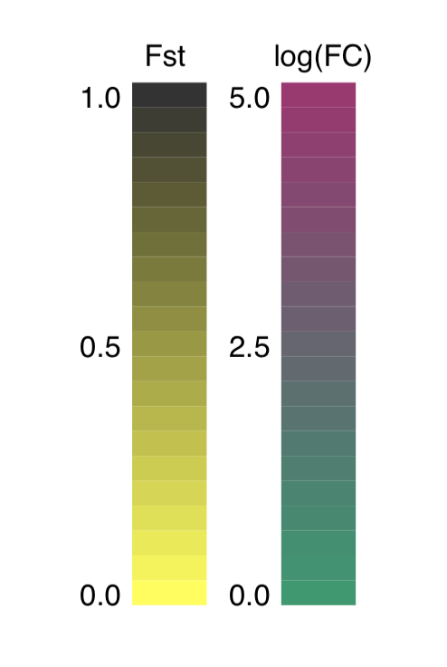
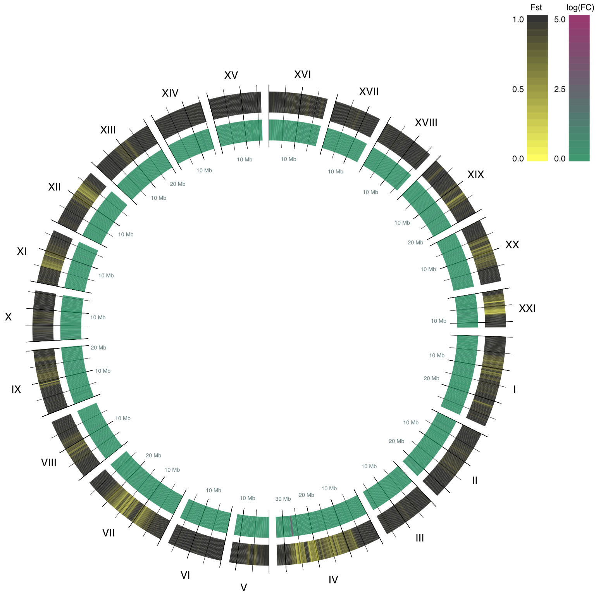

A circle plot is a graph that looks like a ring. Here, I talk about how to draw a circle plot for genetic data with Python. The link to my code on GitHub is here.
The Data
In order to talk about the circle plot, let's first talk about the data used for making the plot. I'm plotting differences in the gene expression profiles of the three-spined stickleback. The three-spined stickleback is a popular model organism for studying population genetics, because they are the fish version of Darwin's finches. They have a wide range of morphology, are easy to keep in lab and find in nature, and most importantly for this blog post, they tolerate salinity very well. In other words, they thrive in both fresh water and ocean water. I used RNA-sequencing data from two three-spined stickleback populations, one from fresh water and another from ocean water.
When visualizing the data, I focused on two things: F-statistics
("Fst") and fold change in gene expression ("FC"). Fst is describes expected heterozygosity level, and it ranges between zero and one. A low Fst value means there is less heterozygosity between populations and they are genetically similar. A high Fst value means that the genetic differences between populations are significant. In summary, if the genetics of the two populations of fish were significantly different, the Fst would be closer to one. If they were similar, the Fst would be closer to zero.
Fold change describes whether one population expressed a gene more or less than the other population. The greater the absolute fold change value, the greater the difference in the gene's expression rate between the two populations. In the data I used, fold change ranges from -10,000 to 10,000, with a median around zero. For example, if the ocean water population expresses genes for regulating sodium level much more than the fresh water population, then the absolute fold change values for those genes would be higher. If the two populations expressed the genes at the same level, the fold change values would be closer to zero.
Visualization
For visualization, I used Python and Pycairo, a Python library providing bindings for Cairo graphics.
Chromosomes to Arcs
In this circle plot, 21 chromosomes of the three-spined stickleback are represented as individual arcs, and scaled according to their size, i.e. larger chromosomes are represented in larger arcs. The arcs are labeled with a roman number for their chromosome number. Each arc starts at base pair 0 and ends at the length of its chromosome. Base pair locations are aggregated into buckets of 300,000 base pairs to keep the image legible. (Side note, three-spined stickleback has a genome that is 446 million base pair long! Us humans have a 3 million base pair long genome.) Here are the arcs for chromosomes I though IV:

Statistics to Colors
Translating Fst and fold change into colors was an interesting challenge. As Fst spans from zero to one, it was relatively easy to choose a color based on the Fst value. A high Fst will be colored in black, while low a Fst value will be colored yellow. The code for generating an RGB color value using Fst value is shown below:
if value_type == 'fst':
value = round(float(value), 2)
r = value
g = value
b = 0
For fold change, I had to be a bit more creative. Fold change values varied in a wide range, and I decided to transform fold change to log scale, which ranges from -5 to 5. Then I multiplied the values by 0.1 so they would be within -0.5 and 0.5. Then I took the absolute value of log(FC), because in this case, whether ocean or fresh water population overexpressed a gene is not an interest, as long as we observe a fold change. A high fold change is shown in purple, while a low fold change is shown in green:
elif value_type == 'stat':
# Multiply by 0.1 so that the
# values range from -0.5 to 0.5.
value = round(float(value)*0.1, 2))
# Get the absolute value because fold change is
# subjective. It doesn't matter which population
# expresses gene more as long as the difference is
apparent.
value = abs(value)
r = 0 + value
g = 0.5 - value
b = 0.3
This is the resulting legend:
The Resulting Plot
After parsing the statistics files, assigning colors, and transforming chromosomes to arcs, here is the resulting circle plot: 
Conclusion
What conclusions can we draw from this visualization of the difference between the genetic makeup of our fresh and ocean water populations?
Even though most of the genome seems to have higher Fst values and therefore the genome is different between the populations, there are conserved regions in the genome (shown in yellow color in this plot). Difference is interesting, but in biology, similarity in genomes often is more meaningful, because it implies that conserved regions contain important genes.
It would be particularly interesting to dive further into chromosome IV because it contains a region that had a large fold changes, while it is highly conserved between the two populations. What genes have been protected from changes when the fish migrated between the different water types? Do us humans have analogs for these genes? What would that mean?
I am overall happy with how it turned out, and it was a great learning experience. Plus, it makes me realize the power of visualization, and how it makes finding unique properties about the data so much easier. Thank you for reading.